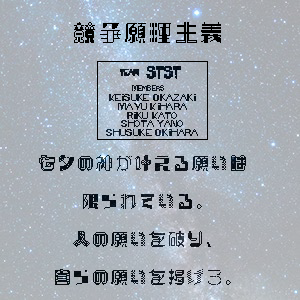
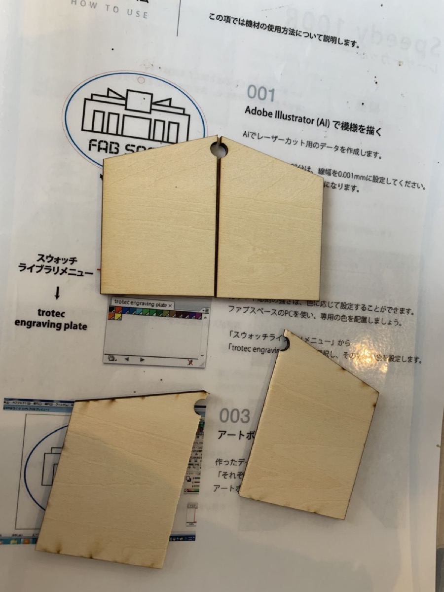
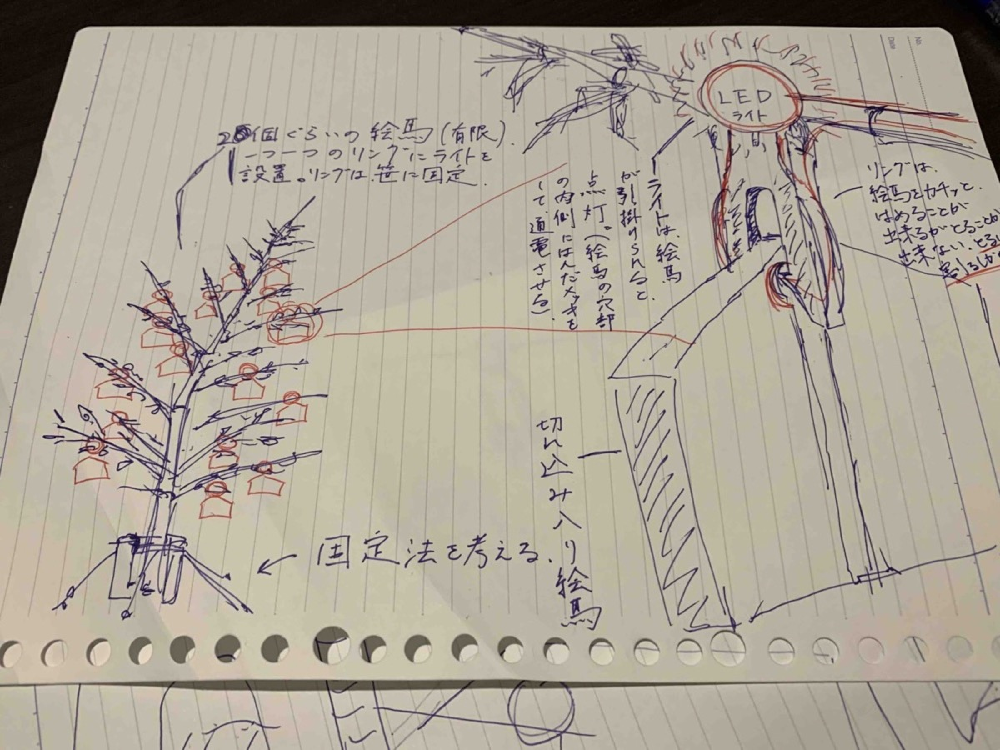
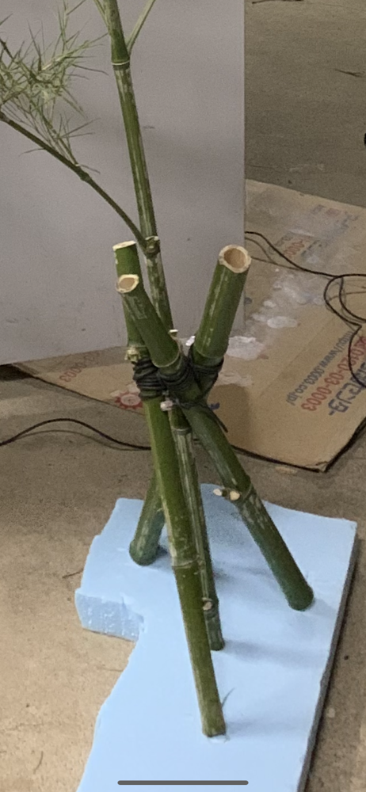
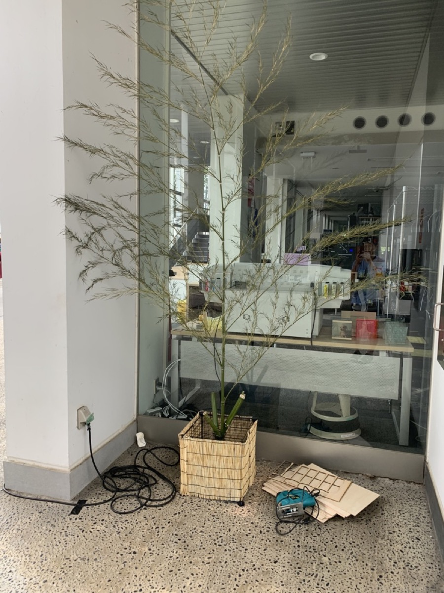

OVERVIEW




人の願いを破り自分の願いを掲げる、という行為が繰り返されることで、七夕の笹には、選ばれた願いのみが掲げられ、壊された願いは、選ばれた願いの栄養となる。
いくらでも願いを掲げられる七夕の裏にも、人よりも自分の願いを叶えて欲しいという思いがある。その思いを強く体感させる事で、体験者に破壊について振り返らせると共に、人々の思いから創り出される七夕の神による願いの淘汰を作品の中に見る。




絵馬が2つに割れるように堀の深さを調節して、レーザーカッターで絵馬を出力した。
絵馬のサイズに合わせた返しをつけたクリップを設計して3Dプリンターで出力する事で、２つに割らなければ絵馬がクリップから取れないようにした。
竹を組み合わせて自立するようにし、割った絵馬をいれるboxを作成した。